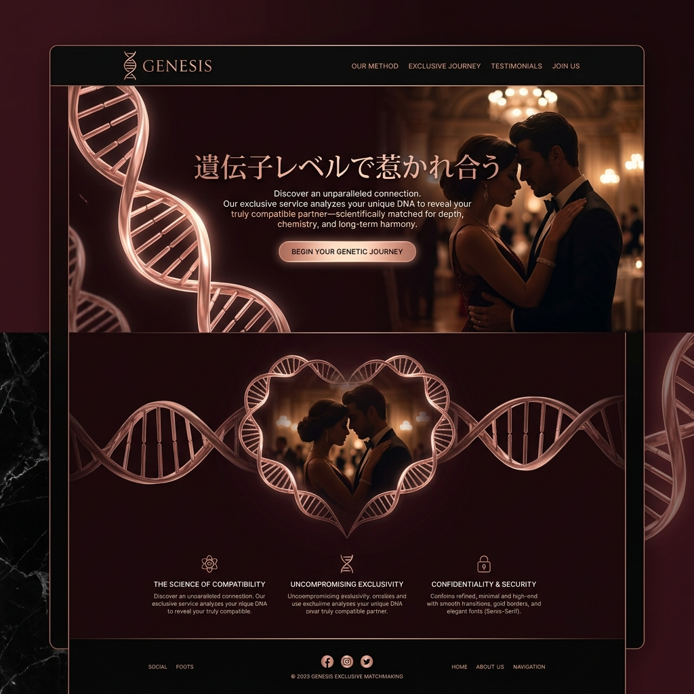

遺伝子レベルで「惹かれ合う」
究極のアルゴリズム。
年収や学歴といった「条件」でのマッチングはもう終わりです。GENESIS-MATCHは、免疫を司るHLA遺伝子（ヒト白血球抗原）の多様性を解析し、生物学的に最も相性の良いパートナーを導き出すバイオ・マッチング・プラットフォーム。

「条件」で選ぶから、結婚がうまくいかない
既存のマッチングアプリは、身長、年収、趣味などの「表面的な条件」で人をフィルタリングします。しかし、いざ会ってみると「なんとなく会話が噛み合わない」「匂いが好きになれない」。これはあなたの直感ではなく、DNAが発する警告なのです。
生物学的多様性を証明する「HLA遺伝子」
スイスのTシャツ実験をデジタル化
人は無意識に、自分と最も遠い免疫型（HLA）を持つ異性の匂いを「魅力的」と感じます。より強い子孫を残すためのこの生物学的本能を、遺伝子検査によって完全数値化します。
自宅でできる簡単唾液キット
登録後に送られてくるキットに唾液を採取し、返送するだけ。約2週間であなたのDNAプロファイルが生成され、システム上に登録されます。
相性スコア（ケミストリー指数）
条件検索の一切を排除。「相性スコア90%以上」の、生物学的に強烈に惹かれ合う可能性が高い相手だけが毎日1人だけ紹介されます。
個人情報を極限まで秘匿するブロックチェーン
究極の個人情報であるDNAデータ。GENESIS-MATCHはゼロ知識証明（ZK-Rollups）という暗号技術を用い、運営側ですら個人の遺伝子配列そのものは閲覧不可能な状態で「相性の計算」だけを安全に行う仕組みを構築しています。
妊娠・出産における「隠れたリスク」の回避
HLA遺伝子の相性が良いカップルは、単に惹かれ合うだけでなく、不妊や流産のリスクが統計的に低下することが研究で示唆されています。GENESIS-MATCHは、将来の家族計画を生物学的な見地からもサポートします。
Case Study | 婚活疲れの30代女性
「年収1000万以上」という条件で50人以上とお見合いするも、誰にもピンとこなかった女性。GENESIS-MATCHで相性98%と出た、条件外の地方公務員の男性と会った瞬間、「昔から知っているような安心感」を覚え、わずか3ヶ月で結婚。現在も喧嘩のない穏やかな生活を送っています。
ロマンスを、科学で再構築する
私たちは「愛」を否定しているわけではありません。無駄な出会いというノイズを取り除くことで、人々が本来持つ「生物としての直感」を取り戻し、真の愛に最速で到達する道標を提供します。